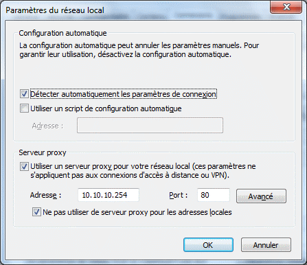

Pour développer une application ou un service Web et bénéficier du débogueur de Xwin :
Le serveur Web doit être installé sur le même ordinateur que Xwin.
Paramétrage complémentaire du navigateur.
Si vous utilisez un serveur Proxy pour accéder à Internet, il faut impérativement préciser au niveau de votre navigateur que ce serveur Proxy ne doit pas être utilisé pour résoudre les adresses locales.
Pour Internet Explorer, le paramétrage se fait comme suit :
Menu Outils à Options Internet
Onglet Connexions, bouton Paramètres réseau
Cochez la case « Ne pas utiliser de serveur proxy pour les adresses locales ».
